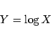
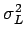
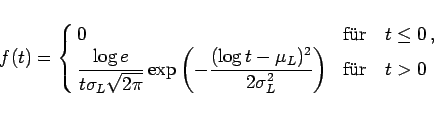
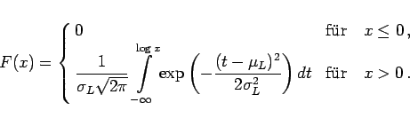
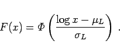

Inhalt Index DeskTop Bronstein

 Wahrscheinlichkeitsrechnung und Mathematische Statistik Wahrscheinlichkeitsrechnung Stetige Verteilungen
Wahrscheinlichkeitsrechnung und Mathematische Statistik Wahrscheinlichkeitsrechnung Stetige Verteilungen


|  | (16.77) |
normalverteilt ist mit den Parametern und . Die Zufallsgröße X hat demzufolge die Dichte
|  | (16.78) |
und die Verteilungsfunktion
|  | (16.79) |
Bei praktischen Anwendungen wird als Logarithmus entweder der natürliche oder der dekadische Logarithmus verwendet.
Bemerkungen:
|  | (16.81) |